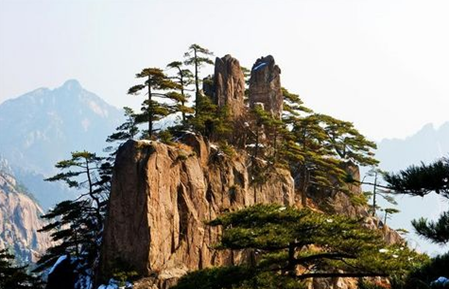
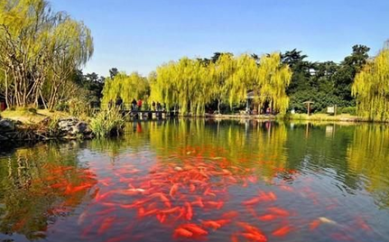
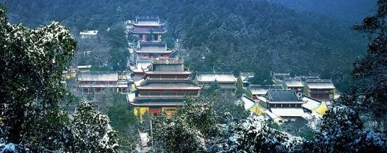

Play the video to discover the beauty of Hangzhou!
The West Lake Spring Dwan at Su Causeway Lingering Snow on the Broken Bridge
Located in Hangzhou, provincial seat of Zhejiang Province, the West Lake is one of the most famed tourist attractions in China. For centuries, the West Lake has been well known both for its picturesque landscape and for cultural heritage surviving yet illustrating the past dynasties. The landscape area of the West Lake includes the surrounding hills and nearby historical sites as well as the lake itself. The lake area covers around 60 square kilometers consisting of 5.68 square kilometers of water area.


Breeze-ruffled Lotus at Quyuan Garden Autumn Moon over the Calm Lake Leifeng Pagoda in Evening Glow
The West Lake is the centerpiece of the natural fascination with bluish hills on three sides, serene and charming. Along the Lake, there stand lines of willows with ancient bridges leaping over them. Mist now veils the whole landscape, now just perches lightly on the green and luxuriant hills in the vicinity with tiny streams winding in deep valleys. More than ninety theme parks and scenic spots are dotted around the lake area such as the Ten Views of West Lake and ten-odd newly named tourist attractions. Rain or shine, the West Lake holds great attraction to tourists in all seasons.


Three Pools Mirroring the Moon Twin Peaks Piercing in Cloud Viewing Fish at Flower Pond
Besides its impressive scenery, the West Lake boasts of abundant cultural heritage and legends passed from generation to generation, commingling natural features, past personages, history, and art in the local area. Thanks to its long history and historic importance, the West Lake is also a cultural resort with 5 major historical monuments and cultural relics under state protection, 35 under province protection, 25 under municipal protection as well as 39 theme museums and cultural spots under a protection system. In the whole landscape area, there are more than one hundred scenic spots open to the tourists at present. Each year there are 0.5 million of foreign guests and 12 million domestic visitors coming to Hangzhou.

Lingyin Temple, founded in 326AD, is regarded as the most recognized temple in Hangzhou with a long history of about 1,700 years. Situated at the west end of the West Lake, the temple is nested between Feilai Mountain and Beigao Mountain. Today, the section flanked by the two mountains is still the Buddhist and poetic destination as throughout history--massive trees, the old temple, dramtic clouds and mist.
Lingyin Temple covers an area of 130 mu, a central axis with Heavenly Kings Hall, the Mahavira Hall, Medicine Buddha Hall, and the Avatamska Hall. Other magnificant Monestary structures includes Zhizhi Hall (Dharma Hall), Huayan Hall, The Hall of Five Hundred Arhats, Jigong Shrine, Liandeng Pavilion, Huayan Pavillion, Great Compassion Pavillion, Abbot Quarters, etc. The Skanda (Weituo) Bodhisattava statue in the Hall of the Heavenly Kings dates back to the period of Tang Dynasty--engraved from 24 huge camphorwoods, 24.8m high with a dignified, majestic appearance.
Since the establishment of Lingyin Temple, eminent monks and scholars have flooded to this center for cultural gatherings in Buddhism, arts, literary, calligraphy, exchanges in Buddhist and Taoism, which presented the longstanding cultural heritage. In addition, many precious historical relics such as antique josses, instruments, Jingzhuang, stone pagodas, imperial stele, calligraphy and painting still exist in Lingyin Temple.
Xixi Wetland, well known for the wonderland-like landscape, is one of the Three "Xi's" along with Xihu (West Lake) and Xiling (the Seal Engravers' Society). Wildlife and beautiful landscapes of Natural wetland, together with its profound but unsophisticated culture, all have given a splendid and mysterious color to this ancient land.Xixi Wetland Park is a national wetland park which integrates urban wetland, farming wetland and cultural wetland. On November 03, 2009, it was listed on the list of important wetlands in the world.


The Beijing-Hangzhou Grand Canal began in the Spring and Autumn Period and has a history of more than 2,500 years. The Grand Canal flows through Beijing, Tianjin, Hebei, Shandong, Jiangsu, and Zhejiang provinces. It has a total length of 1,794 kilometers and is the longest in the world. The largest and oldest artificial canal is a great project created by the working people of ancient China. It is an important and important human cultural heritage that has been alive and flowing.
The Beijing-Hangzhou Grand Canal (Hangzhou section) starts from Yuhang Tangqi in the north and Qiantang River in the south. It is about 39 kilometers long and runs through four districts of Yuhang, Gongshu, Xiacheng and Jianggan in Hangzhou. In 2002, the Hangzhou Municipal Party Committee and the Municipal Government officially launched the comprehensive improvement and protection development project of the Hangzhou section of the Grand Canal, and comprehensively upgraded the water quality, landscape, bridges, roads, ancient streets and ancient buildings of the canal. On both sides of the Beijing-Hangzhou Grand Canal (Hangzhou section), a cultural leisure experience corridor and a water tourism golden line with natural ecological landscape as the core axis, historical blocks, cultural parks, museum groups, temple ancestral halls and heritage sites as important nodes have been formed.
On July 6, 2019, the site of Liangzhu Ancient City was listed as "World Cultural Heritage".Liangzhu Culture is the last Neolithic jade culture in the Yangtze River Delta. Liangzhu Ancient City Site is an example of human early urban civilization, which demonstrates the 5000-year history of Chinese civilization. The success of the bid marks that the 5000-year history of Chinese civilization has been recognized by the international community.
"Enduring Memories of Hangzhou" takes the history, culture and the beautiful natural scenery of the West Lake as a source of creativity. The title is taken from a poem by Bai Juyi (772-846). The 45-minute visual extravaganza highlights the city's rich cultural legacy as well as incorporated international elements that subtly reflect the state of today's globalization.